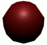

修复具有面的曲面边或轮廓
- 请执行下列任一操作：
- 运行“设置 NURBS 细分”(Set NURBS Tesselation)。
- 确保在渲染 > 设置 NURBS 细分(Render > Set NURBS Tessellation)窗口中已设定为“自动”(Automatic)。
- 为曲面启用“平滑边”(Smooth Edge)（或启用“平滑边”并增加“平滑边比率”(Smooth Edge Ratio)）。
- 增加曲面的“曲率容差”(Curvature Tolerance)和曲面的“U 分段因子”(U Division Factor)/“V 分段因子”(V Division Factor)（增加到能产生可接受结果的最低值）。

修复锯齿曲面边或轮廓（仅适用于 Maya 软件）
- 如果不希望合成渲染的图像，请在“渲染设置”(Render Settings)窗口的 “渲染选项”(Render options)部分中启用“预乘”(Premultiply)。
修复闪烁的薄曲面（仅适用于 Maya 软件）
- 请执行以下操作：
- 在渲染设置窗口中，启用使用“使用多像素过滤器”(Use Multi Pixel Filter)。
- 启用曲面的“几何体抗锯齿覆盖”(Geometry Anti-aliasing Override)，然后增加“抗锯齿级别”(Anti-aliasing Level)（请尝试 3、4 或 5）。
修复闪烁纹理或弹出置换
- 对于实体纹理，请确保曲面的“使用最小屏幕”(Use Min Screen)处于禁用状态，并且“U 向模式”(Mode U)和“V 向模式”(Mode V)未设定为“基于屏幕大小的最佳推测”(Best Guess Based on Screen Size)。
对于图像文件纹理或具有噪波的纹理，可以增加“过滤器偏移”(Filter Offset)（增加到能产生可接受结果的最低值）。
对于图像文件纹理，请将纹理的“过滤器类型”(Filter Type)设定为“二次方”(Quadratic)。
修复围绕 2D 运动模糊曲面的轮廓（仅适用于 Maya 软件）
- 请执行下列任一操作：
- 移除透明对象、雾和/或光晕，并将背景色设定为黑色。渲染场景，然后合成与渲染图像一同移除的元素。
- 在“渲染设置”(Render Settings)窗口中，将“平滑值”(Smooth Value)设定为 0 并启用 Alpha/颜色。
修复粒状或闪烁高光（仅适用于 Maya 软件）
- 请执行下列任一操作：
- 请确保曲面的“使用最小屏幕”(Use Min Screen)处于禁用状态，并且“U 向模式”(Mode U)和“V 向模式”(Mode V)未设定为“基于屏幕大小的最佳推测”(Best Guess Based on Screen Size)。
- 使用 Blinn 材质而非 Phong 或 PhongE 材质。
修复运动模糊曲面上的锯齿边或是锯齿或明晰纹理（仅适用于 Maya 软件）
- 在“渲染设置”(Render Settings)窗口的“抗锯齿质量”(Anti-aliasing Quality)部分中，将“预设”(Presets)设置为“3D 运动模糊产品级”(3D Motion Blur Production)。
修复光线跟踪反射或折射中的锯齿状曲面边、纹理或阴影（仅适用于 Maya 软件）
- 在“渲染设置”(Render Settings)窗口中，将“抗锯齿质量”(Anti-aliasing Quality)设置为“对比度敏感产品级(最高)”(Contrast Sensitive Production (Highest))质量，然后为反射/折射曲面启用“着色采样数覆盖”(Shading Samples Override)，并增加“着色采样数”(Shading Samples)（增加到能产生可接受结果的最低值）。